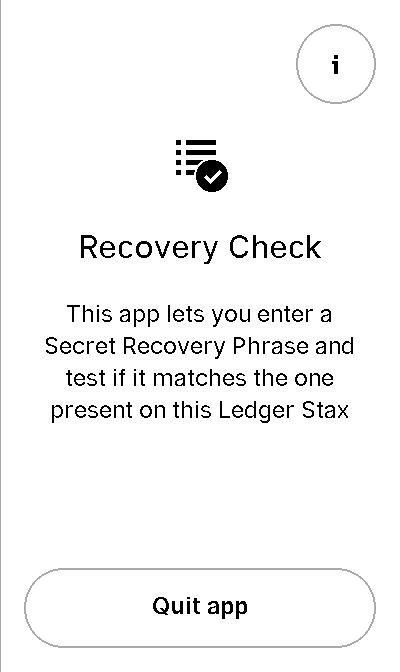

Complex UI management - Flex / Stax
Interacting programmatically with an application tends to be a non-trivial thing, as complex processes (like performing a complete transaction) have to be implemented through low-level actions on the device: forging bytes payloads (the APDUs), triggering the buttons or the screen at the right time, in the right places, in the right order, comparing runtime screens with expected ones, …
All these actions can be automated, with Ragger. When speaking more
specifically about the UI, we saw previously that Ragger had some capabilities allowing
to cope with simple physical interactions (like on the Nano devices: only two
buttons). But what to do with more complex interfaces?
In particular, interacting with the touch screen devices (Stax or Flex) can be bothersome. It is hard to track of button positions, pages layouts and such.
Study case
For instance let’s imagine you develop an application with a welcome screen with a “start” button in the center, a “quit” button beneath and an “info” button on the top right.
If you click on the “quit” button, well the application shuts down.
If you click on the “info” button the screen shows some application infos, with a clickable “return” button on the lower center, which brings back to the previous, welcome screen.
{kind=link}
{kind=link}
This layouts has three clickable buttons. Low-level interaction with them would be something like:
1# going into the "info" screen
2backend.touch_finger(197, 606)
3
4# going back into the "welcome" screen
5backend.touch_finger(197, 606)
6
7# quitting the application
8backend.touch_finger(342, 55)
This does not look very complicated. However, this is just obfuscated code. Without extended comment, you can’t ask someone to understand or remember what this code does. This is a guaranteed path to hard to maintain code.
Moreover, these pixel positions are not guaranteed to last. If the SDK chooses
to change some button position, or if higher-level graphic objects (such as
Pages or UseCase) changes the position - nothing prevents them to move
the “info” button to the top left -, all this code becomes deprecated.
That’s why Ragger mimics the Flex/Stax SDK graphics library and provides
Layout and Use Case (Page will also come soon) classes
that keep track of every interactive screen elements and expose meaningful
methods to interact with them.
Layouts
Ragger’s Layouts and
UseCases allows to quickly describe an
application screens and its attached behavior in a purely declarative way,
thanks to the MetaScreen
metaclass. For instance, with the previously described application:
1from ragger.firmware.touch.screen import MetaScreen
2from ragger.firmware.touch.layouts import CancelFooter, ExitFooter, InfoHeader
3
4class RecoveryAppScreen(metaclass=MetaScreen)
5 layout_quit = ExitFooter
6 layout_go_to_info_page = InfoHeader
7 layout_return_to_welcome_page = CancelFooter
The metaclass will automatically detect all variables starting with layout_
and create related attributes when the RecoveryAppScreen will be
instantiated. This latter will need - like a lot of Ragger classes - a
backend and a firmware as arguments.
Once instantiated, the created screen can be interacted with in a more flexible way than if positions were still necessary:
1# let's say we still have a ``backend`` and a ``firmware`` fixture
2screen = RecoveryAppScreen(backend, firmware)
3
4# the application starts on the "welcome" page, from here we can either quit
5# the application, or go to the "info" page
6
7# this method call will trigger a ``finger_touch`` with the positions related
8# to the "info" centered lower button
9screen.go_to_info_page.tap()
10
11# now the application is on the "info" screen, it can only go back to the
12# "welcome" page
13screen.return_to_welcome_page.tap()
14
15# now the application is back on the "welcome" screen. Let's quit
16screen.quit.tap()
17
18# the application is now stopped
Note
You may have noticed that the two centered lower buttons (the welcome page
“quit” button and the info page “return” button) are exactly at the same
(x, y) positions, so why bother declaring them twice?
First of all, the buttons may be at the same place, but they don’t carry the same purpose, and it is a good idea to reflect that on the code.
Second, if in a future version the Flex/Stax design changes and one of these
button moves somewhere else on the screen’s footer, the layouts will be
updated accordingly in Ragger, and the CancelFooter or ExitFooter
will still be valid, hence all code using this class remains valid too.
If these arguments does not convince you, Ragger provides purely
positional Layouts, and you can use CenteredFooter in replacement of both
of these Layouts.
Use cases
But this is not simple enough yet. The previously shown screens are very common, so common in fact that the SDK provides dedicated high-level Use Cases to simplify their creation.
In this case, there is two. In the SDK, they are named:
nbgl_useCaseHome, which displays the “welcome” page, while allowing to access an “info” or “settings” page.nbgl_useCaseSettings, which displays an “info” or “settings” page. This Use Case is very convenient when dealing with multiple info or settings which need several pages to be displayed (hence needs navigation buttons).
Ragger replicates these Use Cases, and provides more meaningful methods on
top of them. Using Use Cases is very similar to Layouts; they need to be
declared as attribute of a class using the MetaScreen metaclass,
and start with use_case_:
1from ragger.firmware.touch.screen import MetaScreen
2from ragger.firmware.touch.use_case import UseCaseHome, UseCaseSettings
3
4class RecoveryAppScreen(metaclass=MetaScreen)
5 use_case_welcome = UseCaseHome
6 use_case_info = UseCaseSettings
7
8# let's say we still have a ``backend`` and a ``firmware`` fixture
9screen = RecoveryAppScreen(backend, firmware)
10
11# the application starts on the "welcome" page, from here we can either quit
12# the application, or go to the "info" page
13
14# this method call will trigger a ``finger_touch`` with the positions related
15# to the "info" centered lower button
16screen.welcome.info()
17
18# now the application is on the "info" screen, it can only go back to the
19# "welcome" page.
20# if the info needed to be shown on several pages, this Use Case also
21# provides navigation methods, ``.next`` and ``.back``
22screen.info.exit()
23
24# now the application is back on the "welcome" screen. Let's quit
25screen.welcome.quit()
26
27# the application is now stopped
All-in-one solution: the FullScreen
All these classes helps you tailoring a fairly elegant and straight-forward
client with meaningful and easy to write screen controls. However if you don’t
feel like crafting you own screen representation, Ragger comes with a
FullScreen class
which embeds every existing Layout and Use Case.
It can be used to quickly instantiate a screen which could work with any application screen, however of course, all action on this class are not guaranteed to trigger a desired reaction (or no reaction at all) on the application screen, as declared button can be totally fictional.
1from ragger.firmware.touch.screen import FullScreen
2
3screen = FullScreen(backend, firmware)
4
5# these use case methods will work in our case
6screen.home.info()
7screen.settings.exit()
8screen.welcome.quit()
9
10# layouts are also available, on these method will work too
11screen.info_footer.tap()
12screen.exit_footer.tap()
13screen.exit_header.tap()
14
15# this, however, will just randomly click on the screen and may or may not
16# trigger totally unrelated reaction
17screen.letter_only_keyboard.write("hello world!")